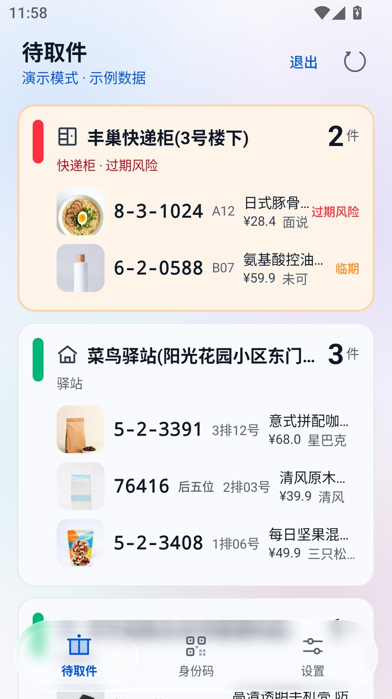
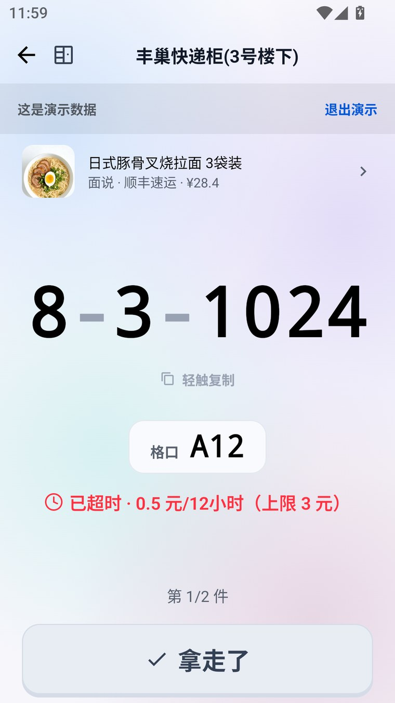
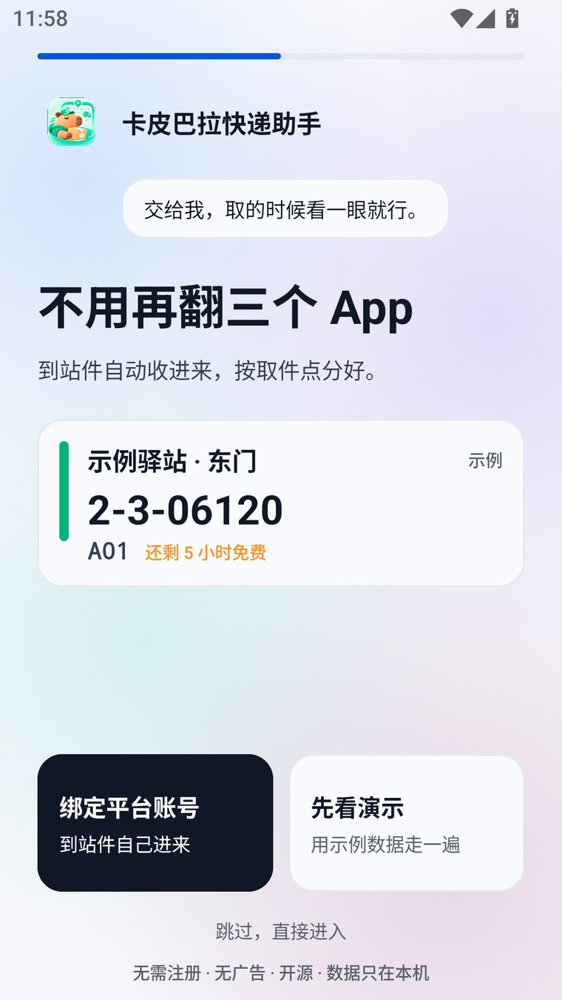

柜机前的三十秒。
翻三个 App、在短信里找那串码、到了柜子不知道是几号格、丰巢还剩多久开始收钱。 这个 App 只干一件事：把这几步压成一眼。
两边是同一个签名包。校验：sha256sum -c SHA256SUMS.txt ·
证书指纹 e18262c9…674d3
码有多大，取决于它有多长
全屏现场模式。字号按 min(基准, 140 / 字符数 × 屏宽) 算——
12 位的码和 4 位的码都不会撑破屏幕，也不会小到看不清。
短信里没有格口号时，那一整块消失、码变大，而不是留一个 --。
没人碰屏幕，顶栏、分组、位置行、「已取」和复制提示一起退场，只留码、格口和倒计时。 举着手机对格口时，最容易被误触的那颗键不在那儿。
只有三种颜色
安全 / 临期 / 过期风险。不靠加第四种颜色表达紧迫度，靠倒计时数字一直在跳。 丰巢按免费保管剩余时间算（默认 18 小时，超时 0.5 元/12 小时、封顶 3 元），驿站按关门时间。
| 状态 | 判据 | 色值 | |
|---|---|---|---|
| 安全 | 离收费还早 | #00B578 |
|
| 临期 | 免费时间快用完 | #FF8F1F |
|
| 过期风险 | 已开始计费，或驿站要关门 | #FF3141 |
长这样



它不做什么
不自动合并取件点
同一个驿站在不同短信里写法不同。App 只提示一句「可能是同一个点？」， 合并前给你看两边各几件、各自的原始写法，合并后 5 秒内可撤销。
不猜取件点名字
认不出码属于哪个点时，宁可放进「没认出来」等你确认，也不猜一个名字生成一张卡片。
不假装能补全漏件
有些件不发短信、也不推通知。任何声称「不登录、不读屏、还能自动补上所有平台的漏件」的方案都在骗你。
不做锁屏组件
第三方锁屏小组件 Android 5.0 就被移除了。取快递时你本来就会解锁手机。
数据不出这台手机
setDefaultUncaughtExceptionHandler。
allowBackup="false"。Cookie 密文与取件码不会被 adb backup 或云备份带走。
上面每一条都能在源码里核对。发现对不上的地方，请开 issue——这比任何隐私政策都算数。
装之前对两道校验
文件有没有在下发路上被换掉
sha256sum -c SHA256SUMS.txt这份清单和 APK 出自同一个仓库，挡的是传输损坏和镜像篡改，挡不了冒充发布者。
这个包是谁签的
apksigner verify --print-certs showcode-0.4.1.apk
# Signer #1 certificate SHA-256 digest
# e18262c9d03e18f111a87774d0887953
# adc686b2650c4f5035372686ecc674d3Android 的签名密钥无法轮换。对得上＝同一个维护者；对不上就不是新版本，是另一个人发的包，别装。